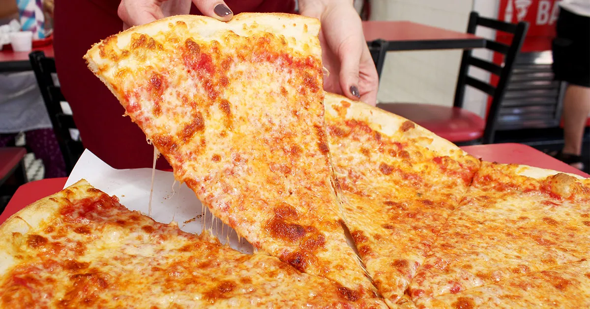

PLAIN CHEESE PIZZA RECIPE

Description:
Plain cheese pizza, the epitome of simplicity and deliciousness, is a timeless classic loved by pizza aficionados of all ages. With a thin crust, tangy tomato sauce, and gooey melted cheese, this pizza allows the flavors of its few ingredients to shine through. Whether enjoyed as a quick meal or a party favorite, a slice of plain cheese pizza is sure to satisfy your cravings.
Ingredients:
- Pizza Dough: Store-bought or homemade
- Pizza Sauce: Tomato sauce or marinara sauce
- Cheese: Mozzarella cheese, shredded
- Optional Toppings:
- Fresh basil leaves
- Red pepper flakes
- Garlic powder
- Extra virgin olive oil
- Grated Parmesan cheese
Steps:
- Preheat the Oven: Preheat your oven to the highest temperature setting, usually around 475-500°F (245-260°C).
- Prepare the Pizza Dough: Roll out the pizza dough on a lightly floured surface to your desired thickness. Place the dough on a pizza pan or baking sheet lined with parchment paper.
- Add Pizza Sauce: Spread a generous amount of pizza sauce evenly over the dough, leaving a small border around the edges.
- Sprinkle Cheese: Scatter the shredded mozzarella cheese over the sauce, covering the entire surface of the pizza.
- Add Toppings (optional): If desired, sprinkle additional toppings such as fresh basil leaves, red pepper flakes, or garlic powder over the cheese.
- Bake the Pizza: Transfer the pizza to the preheated oven and bake for 10-15 minutes, or until the crust is golden brown and the cheese is bubbly and melted.
- Finish: Remove the pizza from the oven and let it cool for a few minutes before slicing. Drizzle with extra virgin olive oil and sprinkle with grated Parmesan cheese, if desired. Serve hot and enjoy your delicious plain cheese pizza!